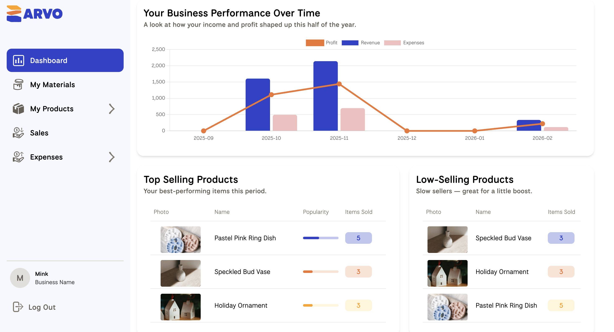
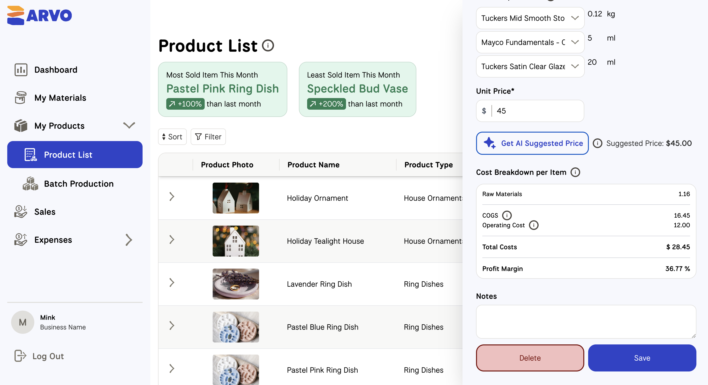
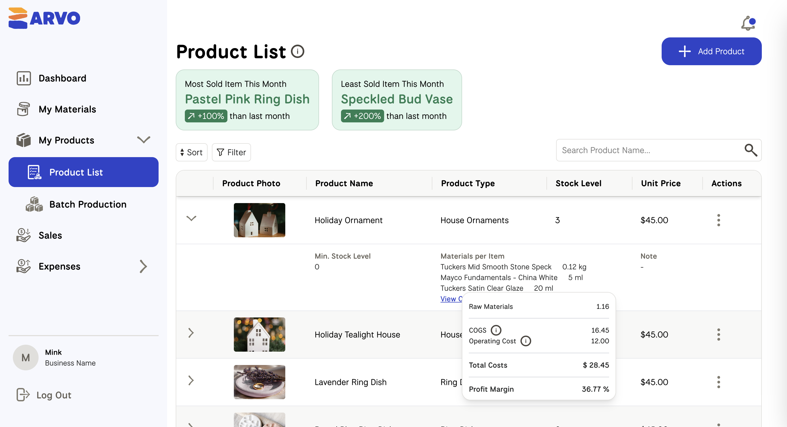
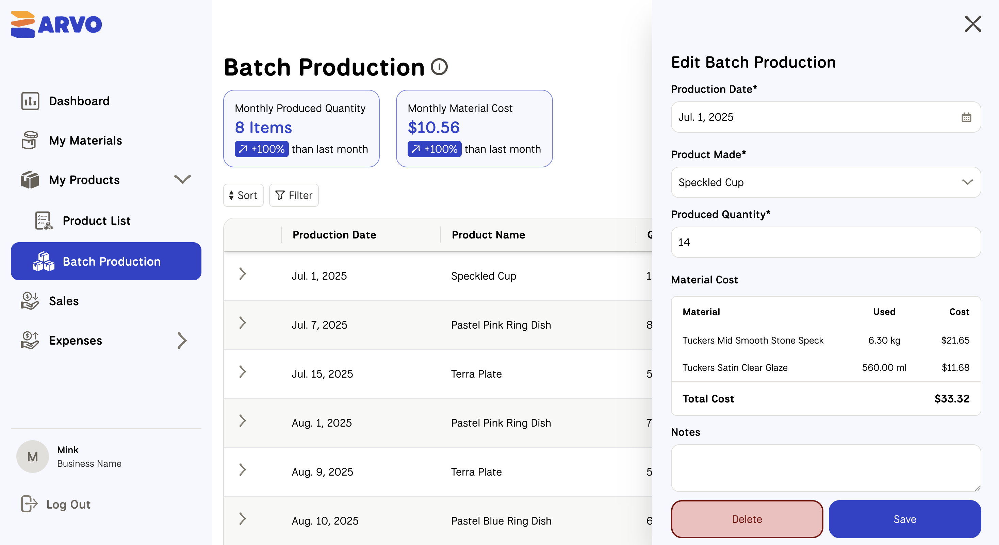

Problem
Independent handcraft sellers had no dedicated tool to manage inventory, orders, and product listings in one place — they relied on spreadsheets and manual tracking, leading to errors and lost time.
Tracking production costs, setting profitable prices, and understanding business health required juggling multiple disconnected tools. Makers needed a single platform that understood their unique workflow.
Solution
Inventory Management Automatically tracks material stock and product quantities based on production and sales — alerting makers before they run out, so no order gets missed.
Cost & Revenue Management Centralizes all costs from materials to overhead in one place, and uses AI to suggest optimal selling prices — helping makers price confidently without spreadsheet math.
Business Health Dashboard Visualizes profit, revenue, and expenses through AI-generated insights and charts — giving makers a clear picture of their business at a glance.
My Contributions
As Product Manager: Led product planning and feature design for first-time business owners with no prior domain knowledge.
- Conducted competitor analysis, defined user personas, and mapped user journeys with the designer — translating insights into an MVP scope that balanced user needs, technical feasibility, and delivery timelines.
- Designed user flows, tooltips, and automated calculations to minimize required input and reduce overwhelm.
- Integrated AI-assisted pricing suggestions and dashboard insights to support informed decision-making without business expertise.
As Full-Stack Developer: Owned the core product modules — Product Master and Production Batch Management — ensuring data reliability through TypeScript and PostgreSQL. Implemented an AI-powered price suggestion feature using GPT-4o mini, with response caching to optimize loading speed. Engineered the prompt to incorporate real market pricing of comparable products, delivering recommendations that go beyond rule-based logic.
As Project Manager: Managed a team of 5 designers and 4 developers — leading sprint planning, coordinating delivery schedules, and reviewing deliverables for quality assurance to keep the project on track across a 3-month timeline.




Impact
Delivered a fully functional MVP within the project timeline. The application features strong data integrity through a modular, maintainable codebase — demonstrating end-to-end ownership from product definition to shipping.
The AI-driven pricing feature provides actionable insights to help makers optimize profitability, reducing the cognitive overhead of pricing decisions for solo entrepreneurs.